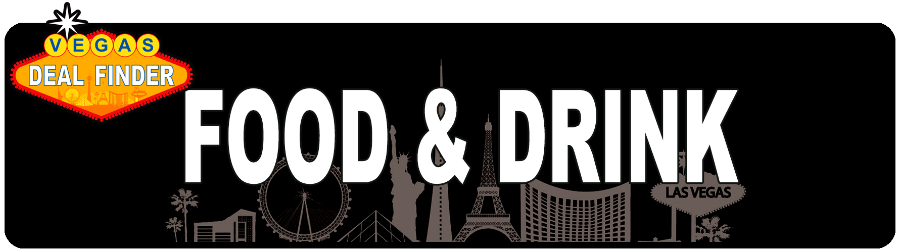

<template>
  <div class="MainContainer">
    <div class="TitleImg center">
      
    </div>

    <h2>VDF TOP DINNER/DRINK DEALS</h2>
    
    <h6>Block 16 Food Hall at the Cosmopolitan</h6>
    <h2>Las Vegas Restaurant Deals </h2>
    <p>Ready to fill that belly full of delicious food?  Las Vegas was built on excess and eating here is no exception. Everything is Bigger and Better in Vegas. You don't need to be a food Network host to know what good food is. Value can play a huge roll in deciding what the best Vegas food values are.  With steaks available for as little as $4.99 all the way up to $499.00 How do you know where the gimmicks end and the real food starts? Knowledge is power and equates into savings in your pocket... lets get started. </p>
    <p>If your on Vegas Deal Finder then you’re here for the deals... not $500 Steaks. Las Vegas restaurant deals are available in abundance if you know where to look. Weather you're a High roller gambler or Low Budget traveler, these tips can save anyone a fortune.  Let’s face it, you’re in Las Vegas to get your party on, not empty your bank account. Leave the foie gras at home and lets think good and cheap!  </p>
    <div class="">
      <span class="red">Checkout out Tops Picks in Red! </span>
      <span class="blue">And Coupon Deals in Blue! </span>
    </div>
    <h2>Breakfast is our Favorite Meal </h2>
    <p>Here are some of VDF picks for Great Breakfast at a Great Price. On the Strip and on Fremont St </p>
    
    <h4>Breakfast Specials  </h4>
    <ul class="specialsList">
      <li class="red">$4.79: Breakfast Special: two eggs, choice of bacon, ham or sausage, two tortillas & potatoes & .99 cent Bloody Mary's. La Salsa Cantina (inside the Miracle Mile Shops. 3663 Las Vegas Blvd South • Las Vegas, NV 89109 ).  </li>
      <li>$4.99 Biscuits & Gravy at Binion Cafe in Banion Casino. Many other great options. 128 E. Fremont St.  </li>
      <li class="red">$4.95 breakfast special. It includes two eggs, choice of bacon or sausage, potatoes & two pieces of Texas toast plus .99 Coffee. PBR Rock Bar & Grill (In front of the Miracle Mile shops, facing the Strip). </li>
      <li>$6.99: New York steak and eggs at Ellis Island , available 11 p.m. to 11 a.m.  </li>
      <li class="red">$5.99 breakfast deals at Ocean One (inside the Miracle Mile Shops) Two eggs, bacon, toast and potatoes meal. $5.99 pancake special with choice of ham, bacon or sausage + 3 for 1 drinks, all day, every day. </li>
      <li>$4.99 Short Stack Pancakes & 2 Eggs at Market St Cafe in Califonia Casino. Many other great options for $5-7   </li>
      <li>$4.99 Biscuits and Gravy or Pancakes at Ellis Island. Breakfast 24 hours. $6-7 Omelets &  $11.99 Steak and eggs.   Many options under $8.  4178 Koval Ln. </li>
      <li>$9.99* Breakfast Buffet at the Garden Court Buffet in Main St Station (just off Fremont) You need a players card for this price. All you can eat and drink (Soda, Tea + Coffee)  American Casino Guide has a 2 for 1 Buffet Coupon making it only $4.99 each  </li>
      <li> $5.99 Waffle Options at The BRUXIE. Also great breakfast sandwiches from $7.99. Come here for a quick breakfast. A Waffle and Chicken Hotspot. 3782 Las Vegas Blvd S (next to New York New York) .  </li>
      <li>$7 unlimited coffee - Bellagio coffee shop - Palio lets you buy a travel mug filled with coffee on your first day for about $7 and they will refill it for free the rest of your trip.  </li>


    </ul>

    <h4>Lunch Specials</h4>
    <ul class="specialsList">
      <li class="red">$4.99 Lunch at Ocean One - In this Miracle Mall shops by the Planet Hollywood Theater, directly across from La Salsa Cantina. Everything on the lunch menu is $4.99 for a sit down meal.  Get 3 drinks for only $10.00 </li>
      <li>$8-9 lunch specials Weera Thai. They come with soup, salad, & an egg roll, and portions are big! 3839 W Sahara Ave Ste 9, Las Vegas, NV </li>
      <li>$6.95 Full Cold Sandwich and a Cup of the Soup of the Day in Aloha Specialties inside California Hotel/Casino.    12 East Ogden Ave. </li>
      <li>$5.99 Famous Burger at Binion Cafe in Binion Casino. Includes Potato Salad or Coleslaw. American Casino Guide has a 2 for 1 Famous Burger Coupon making it $2.99 each. 128 E. Fremont St.  </li>
      <li>$9.00 Shrimp roll at Luke's Lobster, Fashion Show Mall Just up from Treasure Island, across the strip from Wynn & Palazzo. Filled w/ quality shrimp these are so good for $9 New England clam chowder for $9. 3200 Las Vegas Blvd. S</li>
      <li>$5.50 Slices at Five50 Pizza Bar, Aria There's a takeout counter at the front. Sure, $5.50 gets you a huge slice of heaven. 3730 Las Vegas Blvd. S </li>
      <li>$10.99* Lunch Buffet at the Garden Court Buffet in Main St Station (just off Fremont) You need a players card for this price. All you can eat and drink (Soda, Tea + Coffee)  American Casino Guide has a 2 for 1 Buffet Coupon making it only $5.49 each 200 North Main Street </li>
      <li>$6-7 Taco's, Enchiladas and Burritos at La Salsa Cantina (inside the Miracle Mile Shops). 3663 Las Vegas Blvd S.  </li>
      <li>$9.00 Spicy miso ramen at Ramen-Ya Katana, Bally's Grand Bazaar. Tucked into Bally's front yard, this San Francisco import serves up one of the meanest, cheapest bowls of raman around.  3635 Las Vegas Blvd. S </li>
      <li>$4.99 Wednesday Whiskey and Wings Special at Ellis Island. Get a shot of Whiskey and 5 yummy wings every Wednesday at Ellis Island. 4178 Koval Ln.   </li>
      <li class="red">$6.99 Hot Sandwiches and wraps. Earl of Sandwich 3667 Las Vegas Blvd S (at Planet Hollywood Resort & Casino)  </li>
      <li>5.00 Tuesday Tacos and Tequila at Ellis Island. a Shot of Cuervo and 2 Street Tacos every Tuesday. 4178 Koval Ln.  </li>
      <li>$6-7 Burger Combo with Fries & Drink at In-N-Out Burger by the LINQ 3535 Las Vegas Blvd South </li>
      <li> $4-5 Slices Pizzeria Francesco’s located at Treasure Island. Hand tossed New York -style pizza by the slice or pie.   </li>
      <li>$5.99 Shack Burger at Shake Shack, The Park @ New York, New York. Even when you splurge, it's easy to get out the door here for less than $10.  Shack burger is topped with Lettuce, tomato, cheese and Shack sauce. 3790 Las Vegas Blvd. S </li>
      <li>$7-12* Lunch items at Magnolias in the 4 Queens. American Casino Guide has a coupon for 2-for-1 lunch or dinner entrée making the cost $4-6 each.    </li>
      <li>$8.99 Sandra Dee Combo at Pin-Up Pizza, Planet Hollywood  A gargantuan slice of your choosing, a fresh-baked garlic knot and a soda, served up by a distinctively-dressed group of young ladies? You get it. 3667 Las Vegas Blvd. S </li>
      <li>$9.00 Ancient grain bowl at Canyon Ranch, Café Venetian  Buried way back by the Canyon Ranch Spa, you can grab one of these healthy, choose-your-own-adventure bowls to go. Tip: They close at 2:00pm.  3355 Las Vegas Blvd. S </li>
      <li>$9.85 Lunch special at Yard House, The Linq Offered from 11-5 every day, get your choice of a half sandwich (turkey melt, grilled pastrami, roast beef dip or turkey club) or pizza with a soup or salad -- choices include the kale Caesar, clam chowder, French onion soup and more. It's a deal even Grandma will love   </li>
      <li> $20.00 Lunch at Milos in the Cosmopolitan while that may not sound real cheap believe me when I tell you that it is a crazy good Value.   </li>
    </ul>

    <h4>Dinner Specials </h4>
    <ul class="specialsList">
      <li>$6.99 Yummy Hot Sandwiches and wraps. Earl of Sandwich 3667 Las Vegas Blvd S (at Planet Hollywood Resort & Casino)  </li>
      <li class="red">7.95 Surf and Turf at Aloha Specialties inside California Casino. A steak broiled served with crispy fried shrimp, vegetable of the day and choice brown rice, mash potatoes, French fries or steamed rice. 12 East Ogden Ave.   </li>
      <li>$5.99: Loco Moco (a bowl of rice topped with a hamburger patty, fried egg and drenched in brown gravy) at Aloha Specialties at California. Available Sunday-Thursday, 9 a.m.-9 p.m.; Friday-Saturday, 9 a.m.-10 p.m.  </li>
      <li>$7.99 2 Item Combo At Lanai Express in Fremont Casino. Daily choices are: Sweet & Sour Chicken, Sweet & Sour Pork, Orange Chicken and  Pepper Steak. Served with your choice of chow mein, fried rice or steamed rice. </li>
      <li>$5.99: Large Saimin noodles dish at Aloha Specialties in California. Available Sunday-Thursday, 9 a.m.-9 p.m.; Friday-Saturday, 9 a.m.-10 p.m.    </li>
      <li class="red">$7.99: Complete steak dinner is served 24/7 in the Café at Ellis Island Get the $7.99 price by playing at least $5 in any slot machine with your club card. If you don’t want to play, you can get it for $9.99 ($3 off the listed price) just by downloading a coupon from the kiosk that’s available to everyone with a club card.    </li>
      <li>$9.99: Prime rib special comes with soup or salad, vegetable, potato and dessert, available at Market Street Café inside California Casino from 3 p.m. - 6 p.m., daily.   </li>
      <li> $9.95 Daily Dinner Specials at Aloha Specialties Restaurant at California Casino. Special include a daily catch of the day and other delicious items. served with vegetable & choice of rice, potatoes or fries, Roll and butter </li>
      <li>$16.99:* Prime Rib Buffet in Fremont St Casino offers a prime rib dinner served daily with all the fixings   American Casino Guide has a 2 for 1 Buffet Coupon making it only $8.49 each 200 Fremont Street  </li>
      <li> $6.99 Chicken or Lamb over rice plate at The Halal Guys in the Venetian food Court. 3355 Las Vegas Blvd. S </li>
      <li>$5.00 Giant Cheese Slice at Secret Pizza in the Cosmopolitan. .50 cent per topping.  Located on Level 3, The Boulevard Tower 3708 Las Vegas Blvd S. </li>
    </ul>

    <h4>Graveyard Specials</h4>
    <ul class="specialsList">
      <li>$7.99 Burger Special 11pm-6am at the Strat Cafe inside the Stratosphere 2000 Las Vegas Blvd. S, </li>
      <li>$1.95: Two scrambled eggs, biscuits and gravy and bacon or sausage at Ellis Island. Available from 11 p.m. - 6 a.m.  </li>
      <li>$2: Burger and fries at The Burger Joint in Flamingo. Available midnight - 6 a.m.  </li>
      <li>$3.45: New York steak and eggs, available 11 p.m. to 11 a.m. at Ellis Island. </li>
      <li>$3.99: Steak and eggs, toast and hash browns available midnight - 6 a.m. daily at the Courtyard Cafe in the Orleans. </li>
      <li>$5.99: Ribeye and eggs, available 6 a.m. - midnight at The Burger Joint in Flamingo.</li>
      <li>$3.99: Breakfast special, served 11 p.m. - 6 a.m. 2 eggs, biscuits and gravy, choice of bacon or sausage at Ellis Island.  </li>
      <li>$4.99: New York steak and eggs at the Golden Gate. Available between midnight - 2 a.m.  </li>
      <li>$6.99 8 oz. New York Strip at Aloha Specialties in California Casino. Served with Veg. and rice or potato. 11pm-9am </li>
    </ul>

    <h4>Drink Specials </h4>
    <ul class="specialsList">
      <li>$2: Heineken & Corona beers at all casino bars in the California, available 24 hours a day.  </li>
      <li>$1 Bottled Beers at Stage Door Casino Bar 4000 Linq Ln Las Vegas </li>
      <li>$3 Beers at Casino Royale 3411 Las Vegas Blvd. S </li>
      <li>$20: 3 hours Unlimited Drinks at Blondies Sports Bar & Grill in the Miracle Mile Shops. all you can drink wells / domestic draft beers between 3-6pm and again from 10pm – 1am Monday through Friday </li>
      <li>$10 for 3 Cocktails at Flights – Miracle Mile Shops. From 9am-5pm and again from 10pm-Midnight 7 days a week. </li>
      <li>$2.50* 20oz. draft from Ellis Island - *American Casino Guide has a coupon for 3 Free rounds of drinks for 2 people. </li>
      <li>$2.00 Coors light drafts at the Bird Bar in front of Flamingo 24 hours a day. (Strip) </li>
      <li>$2.00 Vodka Drinks at the Cromwell. 9am-8pm M-F (Strip) Happy Hour offers .50 Beers from 5-6pm </li>
    </ul>

    

    <h4>Adult Fun </h4>
    <ul class="specialsList">
      <li>The new Whiskey Licker Up Saloon at Binion's is now open and off to a roaring start! The saloon features an incredible 32-foot diameter rotating bar that has already proven to be the place to be. With drinks, dining, dancing, live entertainment and more - including incredible views of the world famous Fremont Street, Whiskey Licker Up is redefining fun in Downtown Las Vegas! </li>
    </ul>
  </div>

</template>
